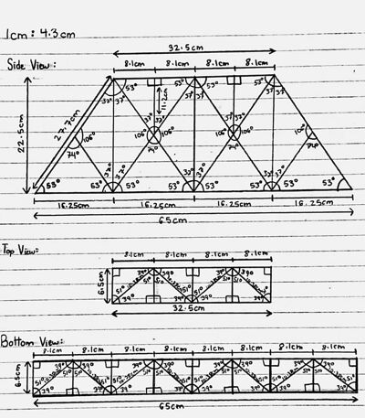
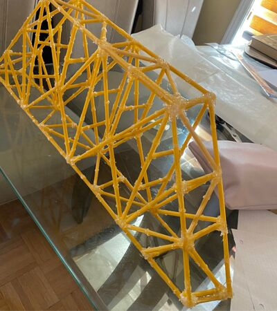

Spaghetti Bridge Project
Combining civil engineering and structural physics through
a
hands-on truss bridge challenge.
Exploring the intersection of civil engineering and structural
physics through a hands-on truss bridge challenge.
Design & Execution
A side-by-side comparison of the initial engineering blueprint and the final physical construction.

Conceptual Design
Civil engineering blueprint of a truss bridge with detailed measurements.

Final Construction
The physical truss bridge was built using spaghetti and adhesive to maximize weight capacity.
Competition Winner
I won the class competition with a record of 19 textbooks stacked on it.
Force Distribution
Analyzed how truss bridges handle force, tension and compression to maintain their structure under load.
Material Optimization
Carefully selected and bundled pasta strands to increase strength and durability.
Load Testing
Tested the bridge’s strength by stacking textbooks to measure how much weight it could support.